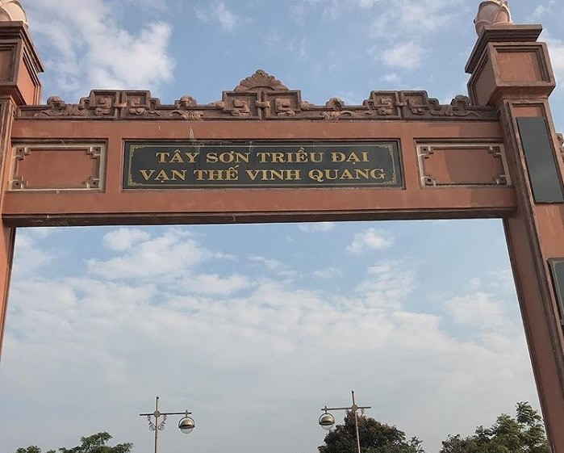
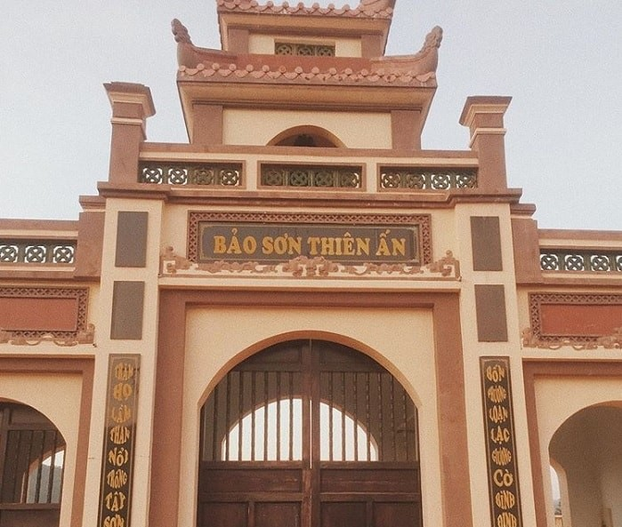
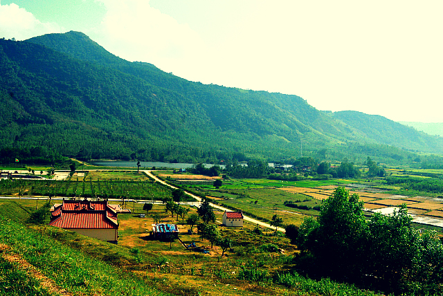

Câu thơ trên đã phần nào lột tả hết được nét truyền thống văn hóa của Bình Định. Truyền thống cha truyền con nối võ học không chỉ người đàn ông, phụ nữ cũng được truyền dạy võ vừa bảo vệ bản thân cũng như đánh giặc ngoại xâm. Nhắc đến Bình Định không ai không nhớ đến Nhà Tây Sơn.
Đàn tế trời đất Tây Sơn hay còn được gọi là Bảo Sơn Thiền Ấn là một khu du lịch tâm linh được xây dựng vào năm 2012 để kỷ niệm 220 năm ngày mất của vua Quang Trung (1792 – 2012) trên núi Ấn Sơn, bên quốc lộ 19, thuộc thôn Hòa Sơn, xã Bình Tường, huyện Tây Sơn, tỉnh Bình Định, cách thành phố Quy Nhơn khoảng 43km.

Sở dĩ chọn địa điểm này xây dựng là vì ngọn núi này thuộc dãy Hoành Sơn – vùng đất có phong thủy tuyệt vời, thậm chí còn nắm long mạch của đất nước, bởi đây là nơi ba anh em Nguyễn Nhạc đã làm chủ được long huyệt để phát triển cả văn lẫn võ, đồng thời dưới chân núi còn có dòng sông Côn uốn lượn như dáng kiếm sơn, hổ phục rồng bay. Có thể nói, đàn tế trời đất Tây Sơn Bình Định không chỉ mang giá trị tâm linh lớn lao mà còn là nét đẹp văn hóa vùng miền độc đáo của nơi này. Nói như người dân địa phương thì công trình này là “tấm lòng của hậu nhân đối với tiền nhân, lưu danh muôn thuở, có công trình này, Bình Định có thêm 1 địa chỉ để nhân dân và cả nước, du khách gần xa đến thăm viếng, bày tỏ chiêm bái tinh thần phong trào Tây Sơn trường tồn…”
Những hoạt động không thể bỏ qua khi đến đàn tế trời đất Tây Sơn Để đến được đàn chính của đàn tế trời đất Tây Sơn, bạn sẽ được đi qua một xóm làng với những cánh đồng lúa bao la xanh ngát một màu cùng không khí yên bình, thanh tĩnh mê hoặc lòng người. Và tất nhiên rồi, một khi đã đến với Bảo Sơn Thiền Ấn thì làm sao có thể bỏ qua việc dâng hương ở Đền Ấn và thắp một nén nhang thờ Trời Đất trên tầng Viên Đàn được đây, cảm giác linh thiêng giữa một khung cảnh hùng vĩ, chắc chắn sẽ khiến bạn choáng ngợp đấy nhé. Còn nếu may mắn đến đây vào đúng dịp lễ tế trời đất được cử hành, bạn sẽ được hòa mình vào không khí đông vui nhộn nhịp của những con người hối hả chuẩn bị lễ vật để mang đi tế trời, cầu cho mưa thuận gió hòa, làm ăn phát đạt.
Thiên nhiên hùng vĩ nơi đây sẽ khiến bạn choáng ngợp